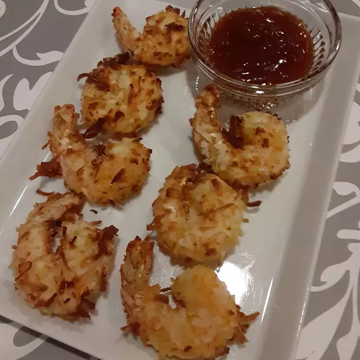

Coconut Shrimp (Air Fryer Edition)

Recipe For Coconut Shrimp:
- 12 oz. uncooked shrimp
- 2 large eggs
- unseasoned coconut flakes
- cooking spray
- ground black pepper
- honey
- Panko bread crumbs
- fresh chopped cilantro
- salt
Follow these instructions to make tasty coconut shrimp to eat by yourself or share with the
family:
- Mix together flour and pepper. Beat eggs in separate bowl. Stir together shrimp and panko. Dip
shrimp in egg. Coat shrimp in coconut mixture.
- Preheat air fryer to 400 degrees farenheit
- Put shrimp in air fryer for 6 minutes total. 3 minutes on one side and 3 minutes on the other side.
- Mix together the honey with lime juice
- Pull shrimp out of the air fryer and enjoy!